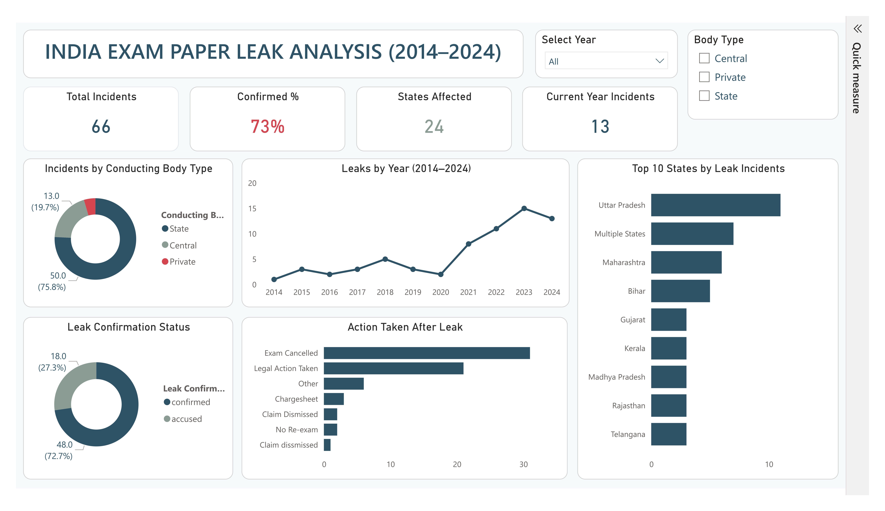
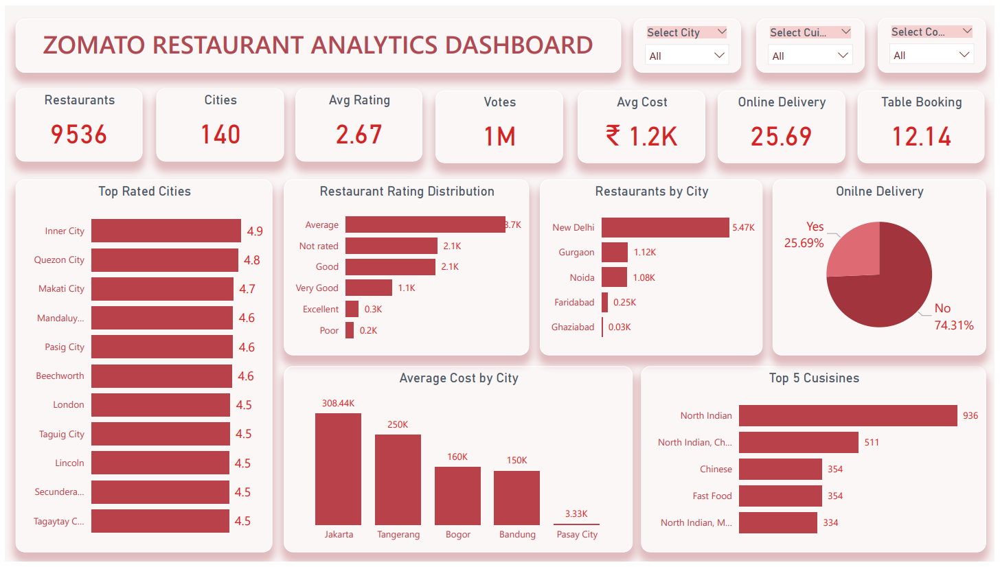
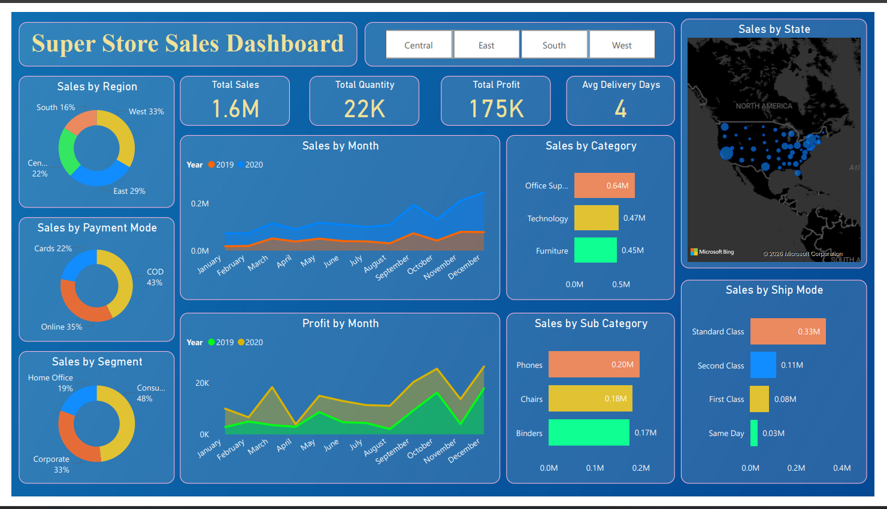

I'm a final-year BCA student (3rd year) specializing in Data Analytics — skilled in Excel, SQL, Python and Power BI. I build dashboards and analyses that help teams understand their numbers and act on them faster.
I'm currently in my third year of a Bachelor of Computer Applications (BCA), with a strong interest in data analysis and business intelligence. I enjoy working with messy, real-world datasets — cleaning them, finding patterns, and presenting insights that are easy for non-technical people to understand.
Alongside my coursework, I've been self-learning SQL, Python (Pandas, NumPy, Matplotlib) and Power BI through online courses and hands-on projects. I'm now looking for an internship or entry-level Data Analyst role where I can apply these skills to real business problems and keep growing under experienced mentors.
A practical toolkit built through coursework, certifications, and self-driven projects.
Three end-to-end projects covering the full analytics workflow — from raw data to a decision-ready dashboard.

End-to-end analysis of exam paper leak incidents across India — from raw data cleaning to an interactive single-page dashboard.

A 4-page Power BI dashboard analyzing 9,500+ restaurants across 140 cities, with DAX-driven filtering by city, cuisine and country.

Cleaned raw sales data with Pandas, then built an interactive Power BI dashboard for sales, profit and regional performance insights.
I'm actively looking for internships and entry-level Data Analyst opportunities. Feel free to reach out — I usually reply within a day.
Email Me →